Circuiti combinatori: ALU
1 Alu
Arithmetic Logic Unit è un circuito combinatorio all’interno del processore per l’esecuzione di istruzioni macchina di tipo aritmetico/logiche
Esempi di istruzioni aritmetico/logiche:
and $2, $3, $4 # $2 = $3 and $4 or $2, $3, $4 # $2 = $3 or $4 add $2, $3, $4 # $2 = $3 + $4 sub $2, $3, $4 # $2 = $3 - $4 slt $2, $3, $4 # if($3 < $4) $2 = 1 else $2 = 0 bne $4, $5, Label # Se $4 != $5, prossima istruzione caricata dall'indirizzo Label beq $4, $5, Label # Se $4 == $5, prossima istruzione caricata dall'indirizzo Label
Quindi l’ALU deve essere in grado di eseguire:
- Somme (add)
- Sottrazioni (sub)
- Istruzioni di confronto (slt, beq, bne)
- Funzioni logiche (and, or)
1.1 Addizionatore
L’ALU deve includere un addizionatore per realizzare le somme di numeri interi in complemento a 2
Circuito combinatorio che implementa un addizionatore a n bit
- Dati 2 x n input: \(A_n-1\; ...\; A_0\; B_n-1\; ...\; B_0\)
- n + 1 diverse funzioni di output: \(Rip\; C_{n-1}\; ...\; C_0\)
- Solo due livelli di logica, ma con porte AND e OR con molti input
- Fan-in delle porte molto elevato (non ammissibile)
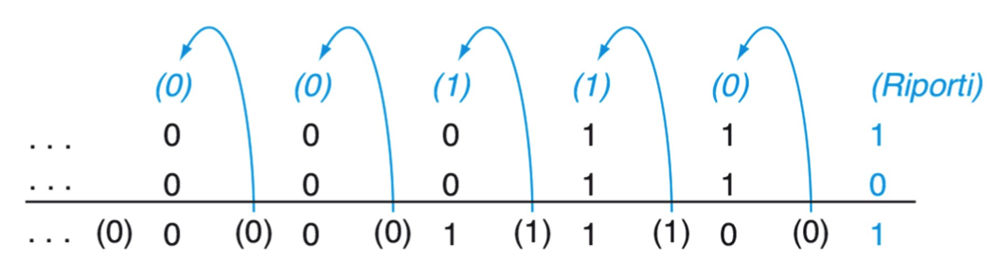
- Fan-in delle porte molto elevato (non ammissibile)
Soluzione di compromesso, basato su una serie di 1-bit adder collegati in sequenza
- Il segnale deve attraversare più livelli di logica
- Porte con fan-in limitato (ammissibile)
- Circuito che usa lo stesso metodo usato dall’algoritmo carta e penna a cui siamo abituati
La tabella di verità dell’addizionatore a singolo bit
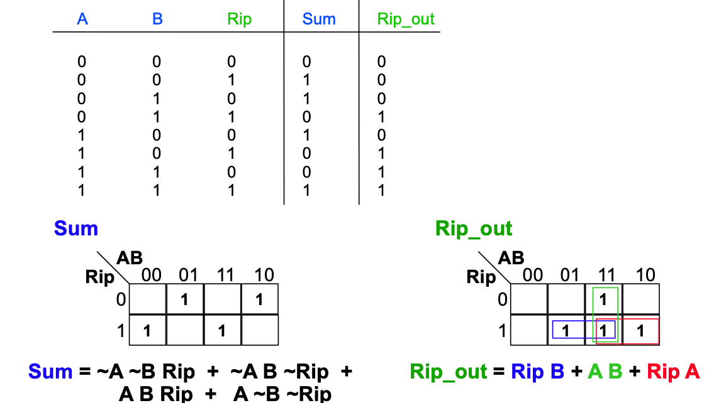
La funzione SUM non può essere semplificata
- Ben 4 porte AND
La costruzione di un 1-bit adder diventa più semplice impiegando porte XOR
- Funzionie logica che vale 0 (F) se entrambi gli ingressi sono uguali, ovvero entrambi 0 (F) o entrambi 1 (T)
Esempio di or esclusivo (XOR) nel linguaggio comune:
- o rimango a casa oppure vado al cinema
1.1.1 1-bit adder usando porte XOR
Visto che la somma tra una coppia di bit A e B si esprime con A xor B abbiamo:
- SUM = (A xor B) xor RIP
- RIP_OUT = A B + (A xor B) RIP
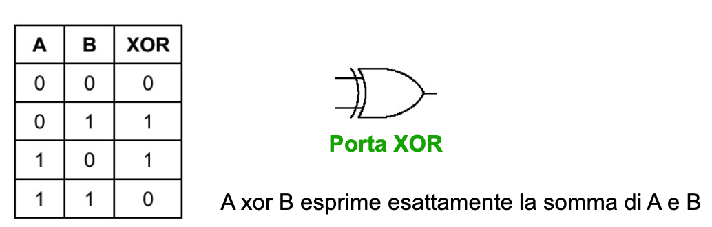
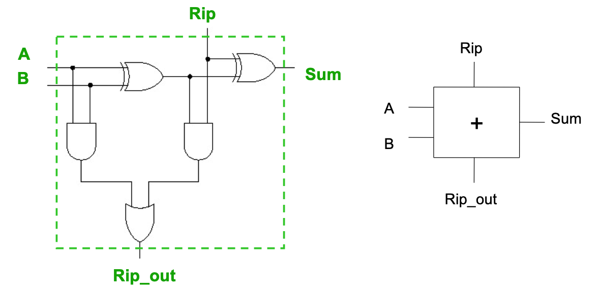
1.1.2 1-bit ALU
1-bit ALU usata per eseguire le istruzioni macchina seguenti:
and $2, $3, $4
or $2, $3, $4
add $2, $3, $4
- OPERATION è un segnale di controllo a 2bit usato per selezionare quale ingresso
del multiplexer deve uscire
- Determina il tipo di operazione che l’ALU deve eseguire
- l’ALU è la tipica componente che fa parte del DATAPATH (Parte operativa) del processore
- La Parte Controllo comanda l’esecuzione delle varie istruzioni
- Settando opportunamente i segnali di controllo dell’ALU (e delle altre componenti della Parte Operativa)
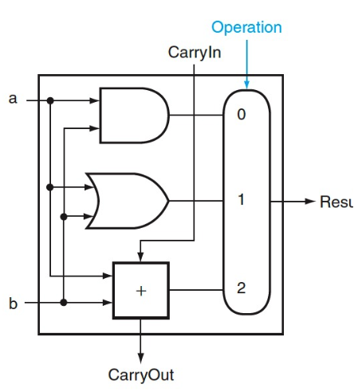
1.1.3 32-bit ALU
Catena di 1-bit ALU con Propagazione del Carry Segnali di controllo per determinare l’operazione che l’ALU deve eseguire
- OPERATION: propagato a tutte le 1-bit ALU
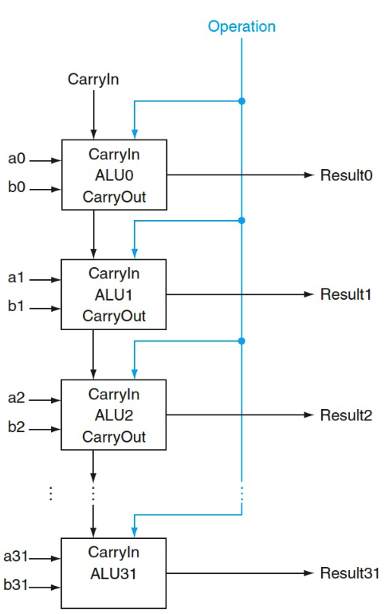
1.2 Inversione e sottrazione
La 1-bit ALU precedente può essere resa più complessa per poter eseguire:
- sub $2, $3, $4
Operazione di sottrazione:
- $2 = $3 - $4 trasformata in: $2 = $3 + (-$4)
- (-$4) significa che bisogna prima determinare l’opposto del numero signed contenuto in $4
- L’ALU deve quindi possedere i circuiti predisposti per
- Invertire il secondo operando e sommare 1
- Per sommare 1, basta porre ad 1 il carry-in dell’ALU
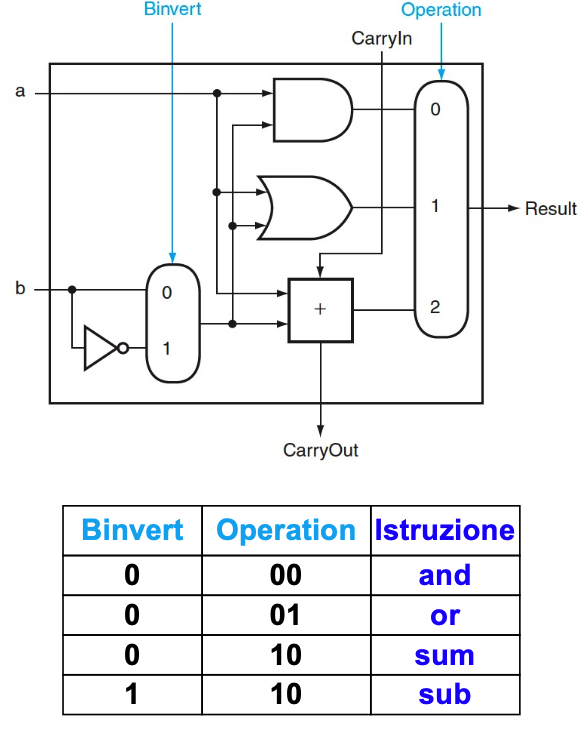
2 Implementazione NOR
Per implementare a NOR b utilizziamo le proprietà dell’algebra per riutilizzare in parte le porte già presenti invece di introdurre una nuova porta
\(\\a\; NOR\; b = NOT\; (a + b) = deMorgan\\\) \(\\(NOT\; a)\; AND\; (NOT\; b)\\\)
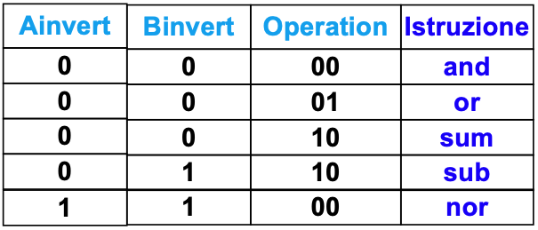 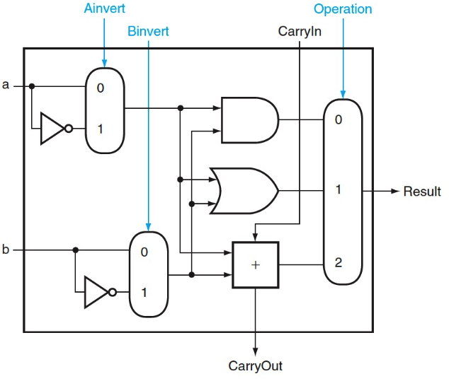
3 Istruzioni di confronto
slt $2, $3, $4 (set less than)
- $2 = 1 se è vero che $3 < $4
- $2 = 0 altrimenti
Se $3 < $4 allora $3 - $4 < 0 Quindi per effettuare il confronto, possiamo semplicemente:
- sottrarre e controllare il bit di segno
- se non c’è overflow durante la sottrazione
- Il valore del bit di segno del risultato della sottrazione può essere semplicemente assegnato al bit meno semplificativo dei 32bit in output
- Tutti gli altri bit in output devono essere posti a 0
Tutte le 1-bit ALU devono quindi avere un ingresso in più
- L’input LESS, che verrà posto a 0 o a 1 sulla base del risultato dell’istruzione slt
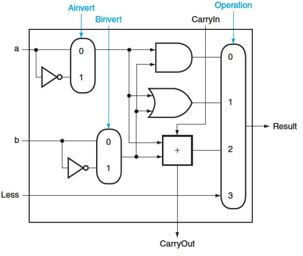
4 1-bit ALU per il bit più significativo
La 1-bit ALU che determina la cifra più significativa è più complessa poichè
- Deve controllare l’overflow
- Deve fornire, come ulteriore output, il bit di segno del risultato della sottrazione (SET)
- Questo per permettere l’implementazione di slt
- Set deve essere ridiretto verso la 1-bit ALU che fornirà in output il bit meno significativo del risultato
Il blocco che controlla l’overflow lo fa sulla base
- Del tipo di operazione (sum o sub), identificata tramite BINVERT
- I segni degli operandi
- Il segno del risultato
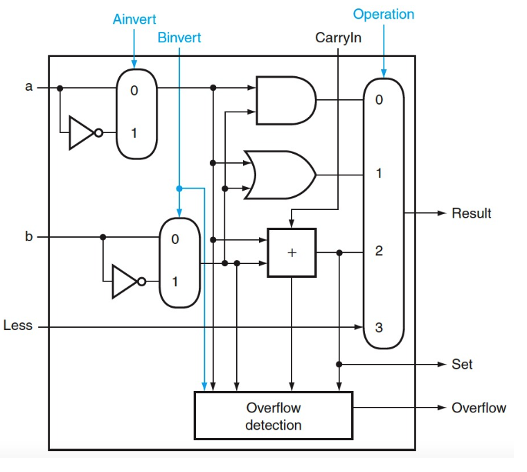
5 ALU complessiva
Output set dell’ultima 1-bit ALU viene ridiretto sull’input LESS della prima 1-bit ALU
Tutti i bit LESS delle varie 1-bit ALU (eccetto la prima) vengono posti a 0
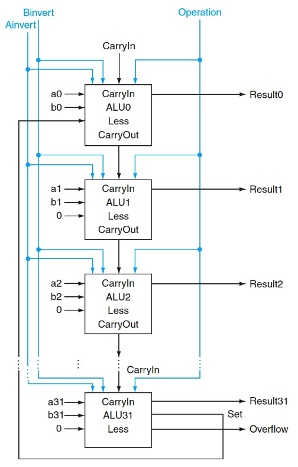
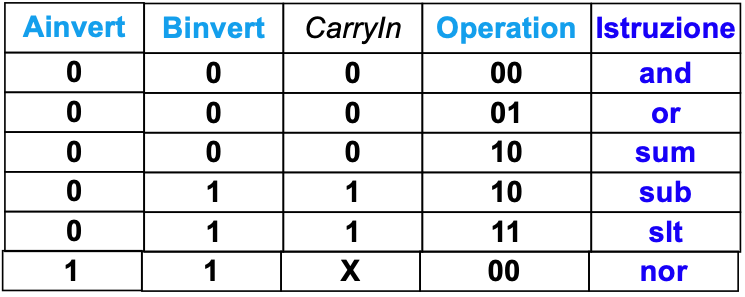
5.1 Segnali di controllo
- Binvert e CarryIn
Vengono entrambi asserted (affermati) per sottrarre (sub e slt)
- Bit di Operation
I bit di Operation sono posti a 11 per far passare in output l’ultimo bit in ingresso ai Multiplexer 4:1
6 SLT e OVERFLOW
Il circuito proposto per implementare l’ultima 1-bit ALU della catena potrebbe NON FUNZIONARE per il slt nel caso di overflow non è ottimale per quanto riguarda l’overflow
Caso di malfunzionamento relativo a slt: slt X2, X3, X4
se \(X3 > 0\) e \(X4 < 0\)
- potremmo concludere direttamente che è vero che \(X3 > X4 \longrightarrow X2 = 0\)
Se invece sottraiamo per implementare slt, finiamo per sommare due numeri positivi \((X3 + (-X4))\)
- potremmo avere overflow, ottenendo così un bit di segno (SET) non valido (uguale a 1, invece che uguale a 0)
Un ragionamento analogo può essere fatto nel caso in cui \(X3 < 0\) e \(X4 > 0\)
7 Circuito per SLT
Set deve essere determinato in modo da evitare il malfunzionamento precedente, relativo a un overflow non voluto Siano
- \(a = a_31\; ...\; a_0\;\) e \(b = b_31\; ...\; b_0*\) i due numeri da confrontare
- \(res = res_31\; ...\; res_0\) il risultato degli 1-bit adder
- \(c = c_31\; ...\; c_0\) il risultato della ALU, che potrà solo essere:
- 0…..01 oppure 0….00
Se \(a \geq 0\) e \(b < 0\), allora \(a > b\), e possiamo porre direttamente Set = 0 Se \(a < 0\) e \(b \leq 0\), allora \(a < b\), e possiamo porre direttamente Set = 1
- Nei 2 casi di sopra, all’ALU viene comandato di eseguire una sottrazione, ma l’eventuale OVERFLOW verrà ignorato
Se \(a > 0\) e \(b > 0\), oppure se \(a < 0\) e \(b < 0\), allora
- Possiamo considerare il risultato della sottrazione, e possiamo porre SET = res_31
- In questi casi non si può verificare OVERFLOW, per cui res_31, conterrà il bit di segno corretto
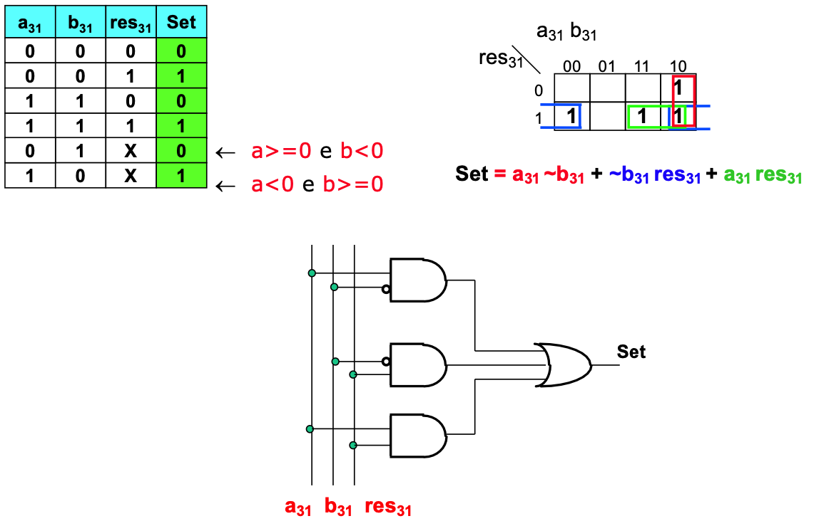
8 ALU FINALE
Abbiamo risparmiato un bit di controllo
- Bnegato al posto di: (Binvert, CarryIn)
- Nell’ALU precedente, infatti, (Binvert, CarryIn) venivano sempre asserted o deasserted assieme
Abbiamo ulteriormente specializzato l’ALU per l’esecuzione delle istruzioni di branch condizionato
- beq e bne
- devo controllare se
- Posso comandare all’ALU di sottrarre, e controllare se
- a - b = 0 oppure se a - b != 0
- Posso comandare all’ALU di sottrarre, e controllare se
- Zero = \(1 \iff a - b = 0 \cdot (a = b)\)
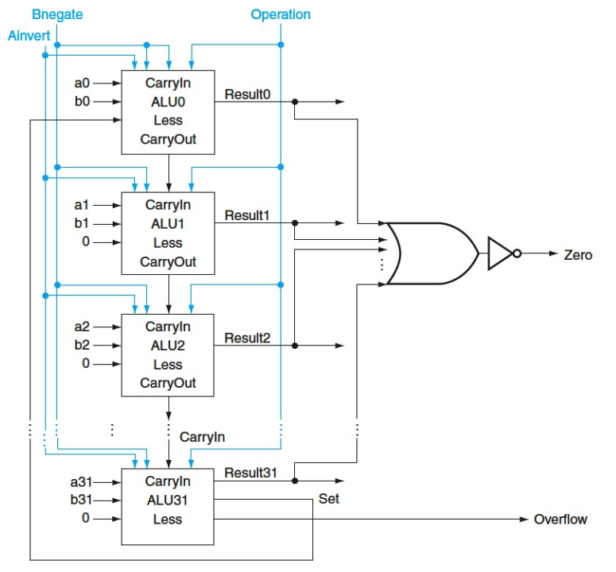
8.1 Simboli usati per per rappresentare la ALU nella CPU
8.1.1 ALU operation
comprende i segnali di controllo Anegate, Bnegate e Operation Gli ingressi a, b e l’uscita RESULT sono a 32bit.
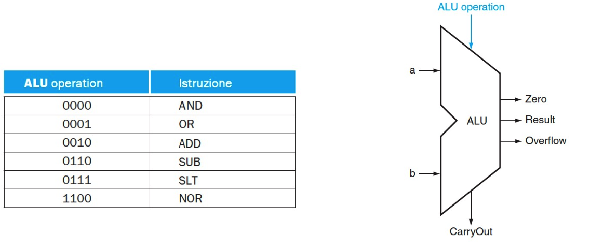
9 ALU e Somma veloce
Considerazioni sulla velocità dell’ALU nell’eseguire la somma:
- L’ingresso CarryIn di ogni 1-bit adder dipende dal valore calcolato dall’1-bit adder precedente
- Il bit più significativo della somma deve quindi attendere 32 volte il tempo di attraversamento del segnale attraverso i vari sommatori \(\rightarrow\) LENTO
…ci sono metodi per velocizzare il calcolo del riporto?
- Si, il metodo del Carry Lookahead
- Si cerca di far passare il segnale per un numero minore di porte, per anticipare il riporto